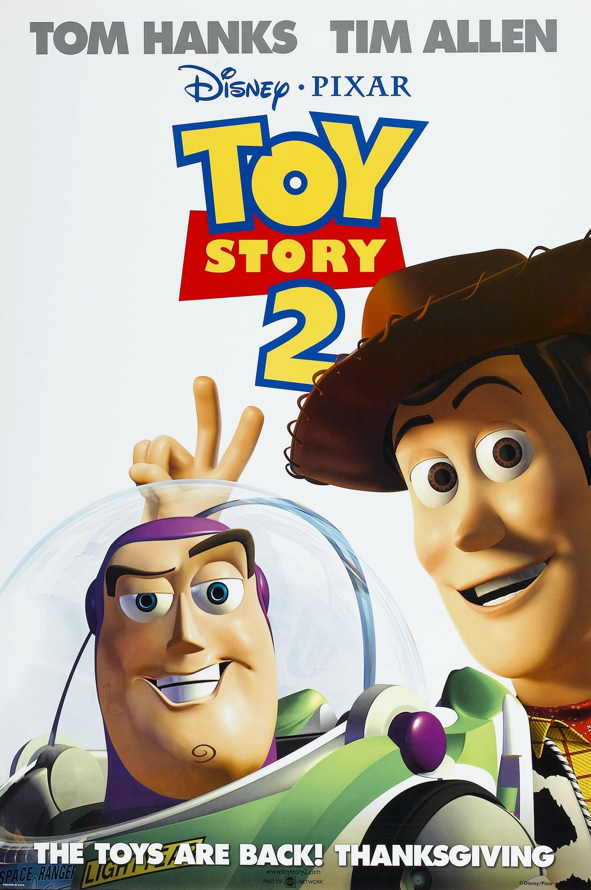
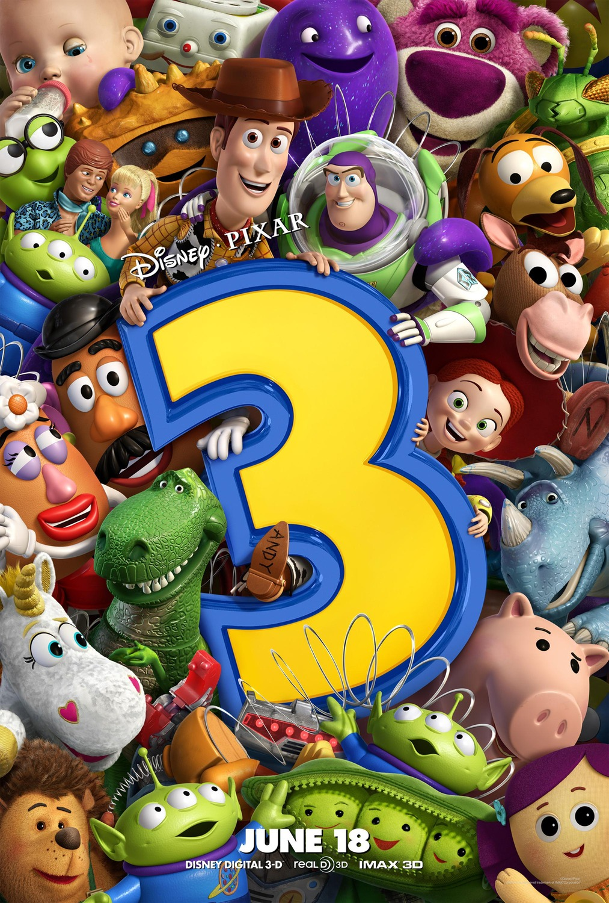
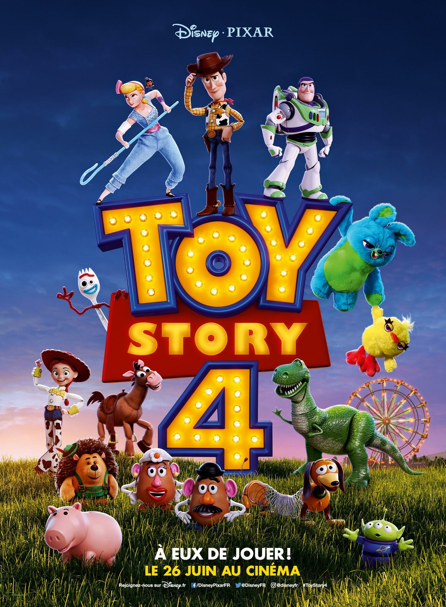
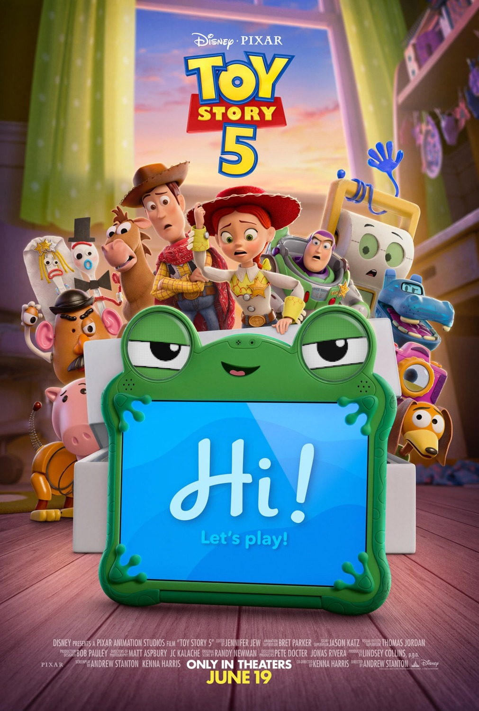

Veamos los posters de las peliculas con sus descripciones:

En el mundo secreto de la habitación de Andy, el liderazgo del vaquero Woody se tambalea con la llegada de Buzz Lightyear, un guardián espacial que ignora su naturaleza de juguete. Una crisis de celos termina con ambos perdidos en el peligroso mundo exterior, obligándolos a unir fuerzas para escapar del cruel vecino Sid. En esta odisea, Buzz acepta su realidad de plástico mientras Woody confronta su inseguridad, transformando su rivalidad en una lealtad inquebrantable. Tras una épica persecución, ambos regresan a casa no solo como compañeros, sino como mejores amigos, demostrando que el verdadero valor de un juguete reside en su capacidad de amar y ser leal.

La lealtad de Woody se pone a prueba cuando es secuestrado por un coleccionista que planea venderlo a un museo en Japón. Al descubrir que es una valiosa pieza de colección de un antiguo programa de televisión, Woody conoce a su nueva "familia": la vaquera Jessie, el fiel Tiro al Blanco y el Capataz. Mientras Buzz lidera una heroica misión de rescate, Woody debe elegir entre la inmortalidad perfecta de una vitrina o una vida finita pero llena de amor junto a Andy. Finalmente, el vaquero comprende que ser amado por un niño es la misión más noble de un juguete.

Con Andy a punto de partir a la universidad, sus juguetes terminan por error en la guardería Sunnyside, un lugar que parece un paraíso pero es una prisión gobernada por el oso Lotso. Woody, el único que logra escapar, debe regresar para rescatar a sus amigos de un destino cruel. Tras enfrentar sus miedos más profundos en un vertedero de basura, el grupo comprende que su ciclo con Andy ha terminado. En un final conmovedor, Andy entrega sus tesoros a la pequeña Bonnie, asegurando que el legado de juego y amistad continúe en nuevas manos.

Instalado en la habitación de Bonnie, Woody se esfuerza por proteger a Forky, un juguete creado con basura que sufre una crisis de identidad. Durante un viaje familiar, Woody se reencuentra con Bo Peep, quien vive como un "juguete perdido" y le muestra que existe un mundo vasto más allá de pertenecer a un solo niño. Al ayudar a la muñeca Gabby Gabby a encontrar su propósito, Woody entiende que su propia misión ha cambiado. En una despedida histórica, el vaquero decide quedarse con Bo para guiar a otros juguetes, eligiendo finalmente su propia libertad y destino.

Proximamente...